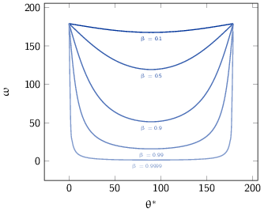

TD1 : Cinématique
On veut étudier la désintégration en deux photons d'une particule \(a\), d'énergie de masse au repos \(mc^2\), animée d'une vitesse \(\beta=v/c\) par rapport au référentiel du laboratoire \(\mathcal{R}\), comme indiqué sur la figure ci-dessous.

- Exprimer les énergies totales \(E_1\) et \(E_2\) des deux photons dans le référentiel \(\mathcal{R}\), en fonction de l'angle d'émission commun \(\theta^*\) des photons dans le référentiel du centre de masse \(\mathcal{R}'\). En déduire les bornes \(E_\text{min}\) et \(E_\text{max}\) de ces énergies.
dans \(\mathcal{R}'\) i.e. le référentiel du centre de masse où \(a\) est au repos et \(\Upsigma\vv{p}^{*} = \vv{0}\) :
→ Conservation de l'énergie totale :
\begin{align*} E_{a}^* &= E_1^* + E_2^*\\ mc^2 &= E_1^* + E_2^* \end{align*}→ Conservation de l'impulsion :
\begin{align*} \vv{p_a}^* &= \vv{p_1}^* + \vv{p_2}^* \\ \vv{0} &= \vv{p_1}^* + \vv{p_2}^* \\ \|\vv{p_1}^*\| &= \|\vv{p_2}^*\| \end{align*}or \(E_{1}^{*} = p_{1}^{*}c\) et \(E_{2}^{*} = p_{2}^{*}c\) d'où \(E_{1}^{*} = E_{2}^{*} = \frac{mc^{2}}{2}\).
Pour déterminer les valeurs d'énergie et d'impulsion dans le référentiel du laboratoire \(\mathcal{R}\), on applique la transformation de Lorentz le long de l'axe \(z\) au quadrivecteur énergie-impulsion
\begin{equation*} \begin{bmatrix} E\\p_xc\\p_yc\\p_zc \end{bmatrix} = \begin{bmatrix} \gamma&0&0&\beta\gamma\\ 0&1&0&0\\ 0&0&1&0\\ \beta\gamma&0&0&\gamma \end{bmatrix} \cdot \begin{bmatrix} E^*\\p_x^*c\\p_y^*c\\p_z^*c \end{bmatrix} \end{equation*} \begin{align*} E_1 &= \gamma\,E_1^* + \beta\gamma\,p_{1z}^*c = \gamma\,(mc^2/2 + \beta c\,p_{1z}^*)\\ E_2 &= \gamma\,E_2^* + \beta\gamma\,p_{2z}^*c = \gamma\,(mc^2/2 + \beta c\,p_{2z}^*) \end{align*}et
\begin{align*} p_{1z}^* &= p_{1}^*\,\cos\theta^* = +\frac{mc}{2}\,\cos\theta^*\\ p_{2z}^* &= -p_{2}^*\,\cos\theta^* = -\frac{mc}{2}\,\cos\theta^* \end{align*}soit
\begin{align*} E_1 &= \frac{\gamma\,mc^2}{2}(1 + \beta\cos\theta^*) \\ E_2 &= \frac{\gamma\,mc^2}{2}(1 - \beta\cos\theta^*) \end{align*}L'énergie minimum \(E_\text{min}\) et maximum \(E_\text{max}\) sont les mêmes pour \(E_{1}\) et \(E_{2}\) avec \(\cos\theta^{*}\in[-1;1]\) i.e.
\begin{align*} E_\text{min} &= \frac{\gamma mc^2}{2}(1 - \beta) = \frac{mc^2}{2}\sqrt{\frac{1-\beta}{1+\beta}}\\ E_\text{max} &= \frac{\gamma mc^2}{2}(1 + \beta) = \frac{mc^2}{2}\sqrt{\frac{1+\beta}{1-\beta}} \end{align*}où \(\gamma=1/\sqrt{1-\beta^{2}}\).

- On s'intéresse à l'angle d'ouverture de la paire de photons, ω, dans le référentiel du laboratoire \(\mathcal{R}\) (voir figure). Déterminer l'expression de \(\cos\omega\) en fonction de \(\cos\theta^*\).
Angle d'ouverture ω en fonction de θ*
Invariant relativiste \(I = (\Upsigma_{i}E_{i})^{2} - (\Upsigma_{i}\vv{p_{i}}^{*})^{2}\,c^{2}\) constant quelque soit le référentiel → \(I_\text{cdm} = I_\text{lab.}\)
\begin{align*} (E_1^* + E_2^*)^2 - \vv{0} &= (E_1 + E_2)^2 - (\vv{p_1}c + \vv{p_2}c)^2 \\ (mc^2)^2 &= E_1^2 + E_2^2 + 2E_1E_2 - (p_1c)^2 - (p_2c)^2 - 2p_1p_2c^2\,\cos\omega \end{align*}or \(E_{1} = p_{1}c\) et \(E_{2} = p_{2}c\) d'où
\begin{align*} \frac{(mc^2)^2}{2} &= E_1E_2 - p_1p_2c^2\,\cos\omega\\ \frac{(mc^2)^2}{2} &= E_1E_2\cdot(1 - \cos\omega) \end{align*}
En remplaçant \(E_{1,2}\) par leurs expressions déduites de la question 1), on a \(E_{1}E_{2} = \left(\frac{\gamma mc^2}{2}\right)^2\cdot\left(1 - \beta^2\cos^2\theta^*\right)\), soit finalement
\begin{align*} 1 - \cos\omega = \frac{2}{\gamma^2\,(1 - \beta^2\cos^2\theta^*)} \end{align*}
Figure 3: Variation de l'angle d'émission ω entre les deux photons émis en fonction de la vitesse β de la particule désintégrée.
La figure 3 indique que plus la particule aura une vitesse grande et voisine de \(c\), plus l'émission des deux photons se fera vers l'avant \(\omega\to0\).
1 Énergie seuil
Soit une réaction entre deux particules \(a\) et \(b\), de masses respectives \(m_ac^2\) et \(m_bc^2\) :
\begin{align*} a + b \rightarrow c + d + e + f \end{align*}Les particules produites lors de cette réaction \(c\), \(d\), \(e\) et \(f\) ont pour masses respectives \(m_cc^2\), \(m_dc^2\), \(m_ec^2\) et \(m_fc^2\).
- On suppose que la réaction a lieu dans le référentiel du centre de masse des particules \(a\) et \(b\) et on se place dans le cas particulier où \(m_ac^2=m_bc^2\). Donner l'expression de l'énergie cinétique minimum, encore appelée énergie seuil dans le référentiel du centre de masse, que doit posséder chacune des deux particules \(a\) et \(b\) pour que la réaction puisse avoir lieu ?
Par définition, l'énergie seuil est l'énergie juste nécessaire à la création des particules en voie de sortie sans que ces dernières n'aient d'impulsion i.e. d'énergie cinétique.
Dans le référentiel du centre de masse, on applique la conservation de l'énergie totale sachant que les particules produites sont au repos i.e. \(\vv{p_c}^* = \vv{p_d}^* = \vv{p_e}^* = \vv{p_f}^* = \vv{0}\). Par ailleurs, \(\vv{p_a}^* = -\vv{p_b}^*\) donc \(T_{a} = T_{b} = T_{S}\) et étant donné que \(m_{a} = m_{b}\), l'énergie totale de la particule \(a\) est égale à celle de la particule \(b\). En appliquant le principe de conservation de l'énergie totale, on obtient
\begin{align*} E_a^* + E_b^* &= m_cc^2 + m_dc^2 + m_ec^2 + m_fc^2 = \Upsigma m_\text{finale}c^2\\ 2T_S + 2mc^2 &= \Upsigma m_\text{finale}c^2 \end{align*}soit
\begin{align*} T_{S} = \frac{\Upsigma m_\text{finale}c^2 - \Upsigma m_\text{initiale}c^2}{2} \end{align*}En définissant \(Q\) comme la chaleur de réaction i.e. l'énergie disponible dans la réaction où \(Q = \Upsigma m_\text{initiale}c^{2} - \Upsigma m_\text{finale}c^{2}\) et \(T_{S} = |Q|/2\), on distingue 2 situations :
- Q > 0
- la réaction est éxoénergétique c'est-à-dire spontanée. Dans ce cas, il n'y a pas d'énergie seuil, la réaction se faisant d'elle même,
- Q < 0
- la réaction est dite endoénergétique et n'est envisageable qu'à la condition de fournir de l'énergie (cinétique) en voie d'entrée.
- On suppose à présent que la réaction a lieu dans le référentiel du laboratoire, c'est-à-dire qu'on envoie une particule \(a\), d'énergie cinétique \(T_a\), sur une particule \(b\) au repos. Quelle est l'expression de la valeur minimale \(T_a\), encore appelée \(T_S\) ou énergie seuil dans le référentiel du laboratoire, pour que la réaction ait lieu ?
Réaction dans le référentiel du laboratoire : soit un faisceau de particule \(a\) envoyé sur une cible fixe constituée de particule \(b \rightarrow \vv{p_b} = \vv{0}\). L'énergie seuil est la valeur minimale de \(T_{a}\) suffisant à la création des particules \(c, d, e, f\) au repos. L'invariant relativiste \(I\) est égal à
\begin{align*} I_\text{lab.} = \left(\Upsigma m_\text{finale}c^2\right)^2 &= \left(\Upsigma E\right)^2 - \left(\Upsigma pc\right)^2\\ &= (T_S + m_ac^2 + m_bc^2)^2 - (p_ac)^2\\ &= (T_S + \Upsigma m_\text{initiale}c^2)^2 - (p_ac)^2 \end{align*}or \(E^{2} = p^{2}c^{2} + m^{2}c^{4} = (T + mc^{2})^{2} \rightarrow (pc)^{2} = T^{2} + 2Tmc^{2}\). On déduit ainsi l'expression de \(I_\text{lab.}\)
\begin{align*} I_\text{lab.} = \left(\Upsigma m_\text{finale}c^2\right)^2 &= T_S^2 + 2T_S\Upsigma m_\text{initiale}c^2 + \left(\Upsigma m_\text{initiale}c^2\right)^2 - T_S^2 - 2T_Sm_ac^2\\ &= 2T_Sm_bc^2 + \left(\Upsigma m_\text{initiale}c^2\right)^2 \end{align*}
Finalement,
\begin{align*} 2T_Sm_bc^2 + \left(\Upsigma m_\text{initiale}c^2\right)^2 &= \left(\Upsigma m_\text{finale}c^2\right)^2\\ 2T_Sm_bc^2 &= \left(\Upsigma m_\text{finale}c^2\right)^2 - \left(\Upsigma m_\text{initiale}c^2\right)^2\\ 2T_Sm_bc^2 &= \left(\Upsigma m_\text{finale}c^2 - \Upsigma m_\text{initiale}c^2\right)\left(\Upsigma m_\text{finale}c^2 + \Upsigma m_\text{initiale}c^2\right)\\ 2T_Sm_bc^2 &= |Q|\cdot\left(\Upsigma m_\text{finale}c^2 + \Upsigma m_\text{initiale}c^2\right) \end{align*}L'énergie cinétique minimum du faisceau incident est ainsi
\begin{align*} T_S^\text{lab.} = \frac{|Q|\cdot\Upsigma m_\text{initiale,finale}c^2}{2\cdot m_\text{cible}c^2} = T_S^\text{cdm}\cdot\frac{\Upsigma m_\text{initiale,finale}c^2}{m_\text{cible}c^2}\geq T_S^\text{cdm} \end{align*}